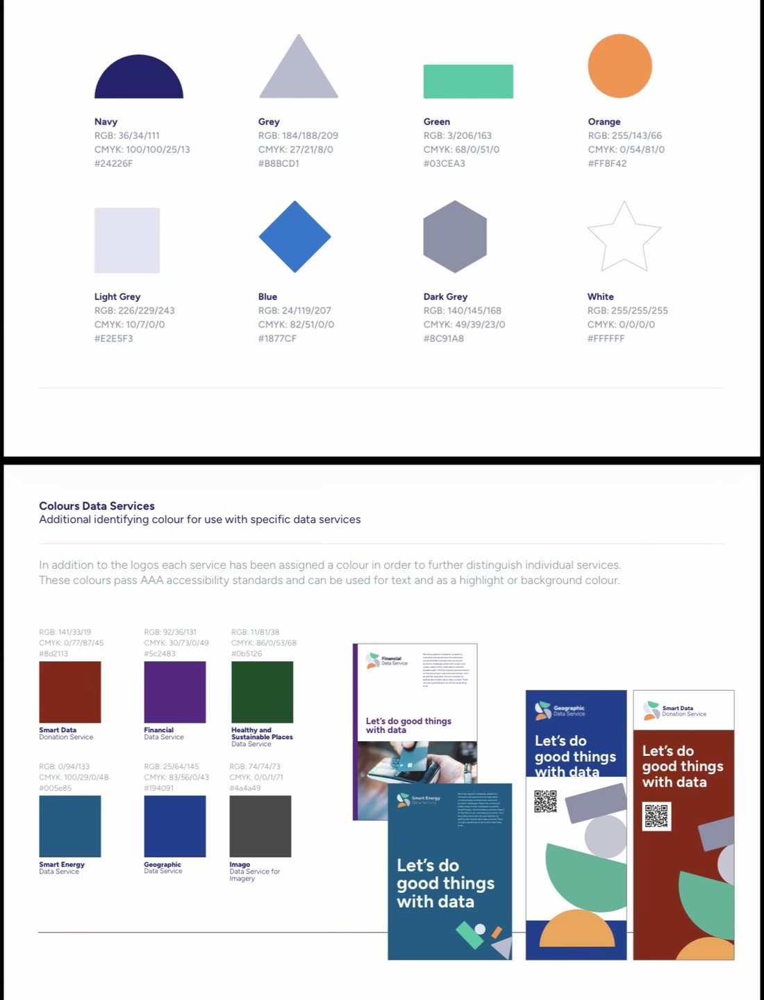

The prompts
Every word the human typed
Day 10’s rule was prompting only, so these 64 messages (2060 words in all) are the whole of the human input: everything else on this site, from the code to the maps, the haiku and the site itself, was produced by Claude Code in response. They are reproduced as typed, typos included (some were dictated). Each number links to the moment in the transcript, where you can see what Claude did with it.
Notes marked typed while Claude was working were sent mid-task and picked up by Claude between steps.
Wednesday 4 November
ok have a read at SPEC.md for context and we can start working. When you're ready, let's get cracking...
all four nations and queen contiguity. Build the graphs first and don't move beyond there for now
record this in LOG.md
drop the islands now from both the graph and the embeddings table. Make it a clear note of this step in the section before moving on
make a quick note to the log too
can you make a quick figure for me to inspect here (is it possible?) to see where the 12 issolates are?
Yes, please add it on that section so there's a record of it.
Make this very lightweight, anything you need for a bass map used contextilly
ok, next is building similarity. There's many distances that can work here, what do you recommend?
cosine perhaps?
let's stick to cosine here. Open up a new section and let's calculate the cosine distance (sklearn?) between every polygon and all of its queen neighors. Use the Graph we've created for this. Also, I think there's scope here to make it work in parallel and it'd be significantly faster, what do you think? don't do anything until we're clear on what
Do you really not think it makes sense to do these in a few batches that are separated in parallel?
What I'm thinking is split all of the polygons in 16 chunks, one per core in this machine, and then calculate the distances for those polygons and their neighbors in a separate worker and collect all the results afterwards.
Is the code much more complex for the chunks?
Go ahead with the parallel implementation then. Yes, split on the focal codes, I think.
yes made an entry on the log.
Okay, now I would like to create a simple table where every L SOA is a row and then there is a column for the nearest no, the most distant or dissimilar area. Let's start with that. We will then think about the most dissimilar group of areas.
ok now let's think about how a distance between the focal area and its neighbors would work. Two thoughts: 1) we get the distances between i and every j in the neighborhood, and then average it; 2) we average the embedding of the neighbors and then the distance. Thoughts?
ok let's calculate both for now, let's think how we'd compute them
Yeah, let's go ahead.
Show me here the scatter plot please.
Okay, I think we have all the pieces to start exploring a few maps. Let's pick the focal area with the highest distance of either type and make me a few simple maps. Use a satellite imagery baseline and include the focal area and all of its neighbors, making sure that you can see the boundary line of the LSOA and the satellite background. Start by building those on your scratch pad and show me the images here.
Okay, this is a great first start. Let's iterate a little bit in how I want the figure to look like and then once we have a template we'll create it for a few more cases. I really like option one, but maybe instead of white lines you can pick another color, maybe red, or use red for the focal and yellow for the rest. And I would also want to have on a corner a very simplified map of the UK in either dark grey or light grey with an accent color for the location where these L SOAs are. So it's easier to place on the general map.
It is a lot. I think it's almost ready. One more thing I would like to try. Can we maybe fade the base map in the areas that are not part of the vocal or neighbors. What I'm thinking is that you could maybe get a polygon that covers everything that is not part of a polygon in the image and then apply a light Dark transparency to fade it away.
Fantastic. Let's iterate a couple on of items more. One, show me a few alternatives with different colors for the fade. I like your idea of a light one that makes it more washed, but think also of at least two more to compare. Then I also want you to think of other combinations of the lines that highlight the L SOAs. Red and yellow are very effective but are not, at least in these tonalities, the most aesthetic. Show me at least five combinations. And then finally, the inset, given that we have the fade, let's do one without any rectangle. I just want the shape of the UK and pick the color for the UK then based on a contrast with whatever the fade is. Take these three dimensions and make me a grid of combinations to see which one Ilike best.
actually, can you try one more using the Imaco color palette? If you don't know what that is, get a sense from imago.ac.uk
Let’s stick with C1 for now. Add it as the template and update for the notebook and the log
Actually I want the UK polygon and all the text in the image to be imago grey. See the actual palette attached and update accordingly

I like with the official colors a bit more. A couple of further iterations: 1) if you’re using Imago grey (#4a4a49), can you make the text in bold? Also, can you use the official font, which is figtree? 2) Make the UK polygon in Imago grey also, and the dot on that polygon in the orange of the focal area. I really like the setup of the image, it looks like a Polaroid picture, can we keep/reinforce that for when we export?
Ok almost perfect: one more thing on the Polaroid side: can you keep a larger margin at the bottom than at the top (that’s how Polaroids are no?) and also can you make it somehow so that it keeps this layout clear even if it’s displayed against white? Maybe with a thin border line?
Let’s start with the top 5 for each measure
OK I see the point of these, they’re true but not the most interesting. Maybe let’s switch gears from neighboring sets to pairs. Let’s look at the largest distance between a pair of neighbors. Before that, include these top five in the notebook and log if not there yet, and start a new section for this.
Yes, let’s expand the Polaroid approach to also be able to accommodate pairs
OK two ideas to try to find more interesting “Polaroids”:
1. Restrict the search within the bounds of specific cities (e.g., London, Liverpool). That way, the chances of countryside vs urban are lower
2. Try a different approach:
a. Cluster all the LSOAs in a bunch of similar groups with say K-means (e.g., k=100)
b. Explore if those clusters capture features or items (e.g., industrial, residential, agriculture, different mixes)
c. Then set up the search for different neighborhoods at the cluster level (e.g., what is the industrial estate next the most different landscape?)
what do you think?
1. Restrict the search within the bounds of specific cities (e.g., London, Liverpool). That way, the chances of countryside vs urban are lower
2. Try a different approach:
a. Cluster all the LSOAs in a bunch of similar groups with say K-means (e.g., k=100)
b. Explore if those clusters capture features or items (e.g., industrial, residential, agriculture, different mixes)
c. Then set up the search for different neighborhoods at the cluster level (e.g., what is the industrial estate next the most different landscape?)
what do you think?
I said 100 randomly, do you think a different number might be best to start with?
OK log this exploration and lets move its development to a second notebook. To make sure we rely on the same tooling, is the Polaroid template, etc. In a separate .py file that can be used across notebooks? If not, make it so
20 and 100
Thursday 5 November
Show me the contact card for urban centers in the k20
Can you find a better fit for that description in k100?
Let’s stick with 95. Let’s play with the Polaroid, can you show me the Polaroid of the top 5 distances in cluster 95?
I’d like to get a sense of how big those distances are. Add a flag to the Polaroid method that when True, adds a dense histogram of all distances in the entire dataset, not the cluster, and a vertical line on the value of the distance of the pair represented in the Polaroid. Make look nice, elegant, and in line with the aesthetic of the current figure. Show me that to 5 again then
How are the Glasgow ones different? They seem similar to me
OK let’s explore Polaroids in this cluster but for the lag rather than pairs. Show me the top 5
One more tweak to the Polaroid: do you think we can fit an additional graph that is a horizontal bar chart with one bar per embedding dimension and two bars/values in each bar, one orange and one green, corresponding to the values for each area respectively. Basically, I want to visualise the differences in the two embeddings being compared. Maybe this is too crammed and is instead better to do it in lieu of the histogram? Add a flag on the Polaroid method and show me a couple of examples
Let’s try the difference and also this other option: one bar only with both orange and green on top of each other with transparency. That way similar dimensions are obvious and don’t take up space, while different ones are also clear
Yeah give it a try
Do that and update the log and notebook with this exploration
Scan the 100 clusters and provide me a list of pending other clearly delimited entities such as docks, parks, golf courses, industrial estates, etc.
Monday 9 November
for each of the entitites, show me the top 3 polaroids
OK I need to be wrapping this up. I'd like the submission to the map challenge to be a couple of polaroids that are striking, highlight well the value of embeddings, and are a good example of the point they're traying to make. Which specific ones would you pick of all we've created?
Show me the images again with the names
I’d replace the third one with another one that is entirely within a human settlement. What do you propose?
Ohhh why is the middle in the bottom row there? Both seem similar?
Yes
Ok log up to here and update notebooks as required
Ok I want to refine the final submissions. I like the cases, but I want to tweak the Polaroid template. Perhaps both the density plot and the embedding graph are too nerdy. Let’s get rid of them and, instead, write a haiku that brings the most interesting aspect of the pair (given the discussion we’ve had here).
Also, separate, here’s an idea: what if we only include the reservoir as the most different, and then find the most similar pair? Include also, for good measure, the most similar urban pair
Also, separate, here’s an idea: what if we only include the reservoir as the most different, and then find the most similar pair? Include also, for good measure, the most similar urban pair
Use a typewriter font for the haiku, it’ll give more of a Polaroid vibe
Tuesday 10 November
I like the reservoir and the two very similar ones, let’s keep those.
Open up a new final notebook that all it does is the process from start to end to create the final submission, detached from all the analysis it brought us here
Open up a new final notebook that all it does is the process from start to end to create the final submission, detached from all the analysis it brought us here
Log up to here and remove leftovers.
This viajen is promoting only, you check/confirm the names please
This viajen is promoting only, you check/confirm the names please
OK great, now we need the text for the post on LinkedIn. Make one that is succinct, gets the point across, and is not very Claudian or LinkedIn’y
OK great, commit this text to the submission notebook
Update the log too
Great now the final move. I’d like to turn all this material in a simple website (quarto?) that lets the user see first and foremost the context and submission, and then dig into the backstory of how we got there. Keep in mind the Polaroid theme for the styling of the site. And, very important, find a way of exploring this full conversation we’ve had and include it there, once as a full transcript but also if you find cool ways to thread it through the rest of the site. Once you’re done here, I’ll take this whole folder and dump it on a github repo where I can turn Pages on as you tell me. Make it all simple and easy to run afterwards on my own (so good documentation). Ahhh, and I’ll not include the data files in the repo, so sound for that
ok I created a new GH repo at https://github.com/darribas/map_challenge26-prompt_only.git Use your gh credentials to check the work here there